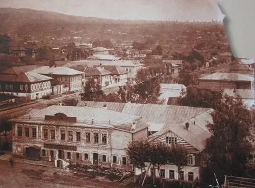
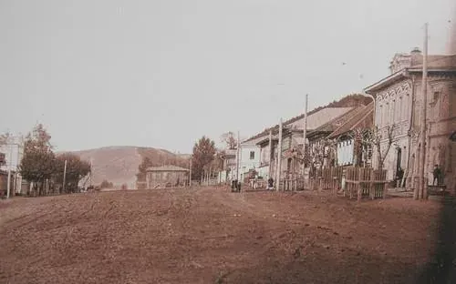
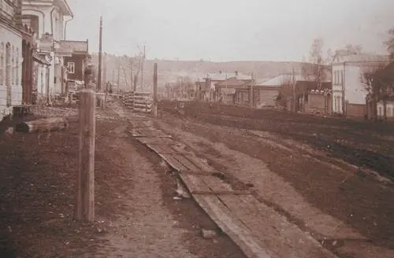

Старый город
Каким его помнят снимки
Деревянные тротуары, купеческие дома Большой улицы, дореволюционные панорамы заводского посёлка — по архивным фотографиям видно, каким Михайловск вошёл в XX век.



